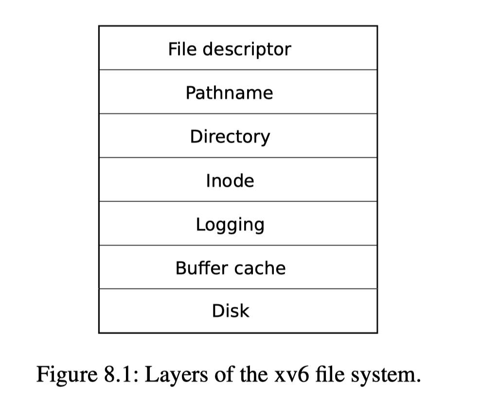

Xv6 fs lab
文件系统
文件系统作用
文件系统的作用是用来管理和保存数据。通常文件系统支持用户，应用程序之间共享数据；支持数据的持久化。
文件系统面临着以下的挑战:
-
文件系统需要on-disk的数据结构来表示目录文件的结构树，保存文件信息的block位置，记录disk中哪些位置是空的
-
文件系统必须支持crash recovery。必须要支持恢复之后的数据一致性
-
不同进程可能同时使用同一个文件，因此文件系统必须支持并发访问
-
由于访问磁盘要比访问内存慢很多，因此文件系统必须支持对热数据在in-memory建立缓存
Xv6 文件系统实现
Xv6 中文件系统的实现是在kernel/fs.c中
下图展示了Xv6文件系统的实现：

其中inode layer是最核心的，和其他文件系统一样，一个inode描述一个文件。inode会有一些in-memory的数据结构来保存状态，比如ref, valid。
实现Large file
这一步我们需要扩大文件大小的限制，以将支持的文件大小从KB级别提升到MB级别。
之前之所以有文件大小的制约是因为inode指向的block数量是有限的，只能有(12 + 1*256 = 268)个blocks。如果在inode的dentry里面将一个普通entry修改为指向一个保存了256 个次级block entry的block的entry。则能够使得文件大小最大为(11 + 1*256 + 1*256*256)个blocks。
首先要做的是在加载文件的block layer的时候分配这个entry:
#define NDIRECT 11
#define NINDIRECT (BSIZE / sizeof(uint))
#define DINDIRECT ((BSIZE / sizeof(uint)) * (BSIZE / sizeof(uint)))
#define MAXFILE (NDIRECT + NINDIRECT + DINDIRECT)
// On-disk inode structure
struct dinode {
short type; // File type
short major; // Major device number (T_DEVICE only)
short minor; // Minor device number (T_DEVICE only)
short nlink; // Number of links to inode in file system
uint size; // Size of file (bytes)
uint addrs[NDIRECT+1+1]; // Data block addresses
};
static uint
bmap(struct inode *ip, uint bn)
{
uint addr, *a;
struct buf *bp, *i_bp;
if(bn < NDIRECT){
---
}
bn -= NDIRECT;
if(bn < NINDIRECT){
---
}
bn -= NINDIRECT;
if(bn < DINDIRECT){
// Load doubly-indirect block, allocating if necessary.
if((addr = ip->addrs[NDIRECT + 1]) == 0)
ip->addrs[NDIRECT + 1] = addr = balloc(ip->dev);
// First indirect
bp = bread(ip->dev, addr);
a = (uint*)bp->data;
if((addr = a[bn / NINDIRECT]) == 0){
a[bn/ NINDIRECT] = addr = balloc(ip->dev);
log_write(bp);
}
brelse(bp);
// Second indirect
i_bp = bread(ip->dev, addr);
a = (uint*)i_bp->data;
if((addr = a[bn % NINDIRECT]) == 0){
a[bn % NINDIRECT] = addr = balloc(ip->dev);
log_write(i_bp);
}
brelse(i_bp);
return addr;
}
panic("bmap: out of range");
}
还要考虑的是在释放一个inode的时候，要递归释放这个新增加的"doubly-indirect" block。 代码如下:
if(ip->addrs[NDIRECT+1]){
bp = bread(ip->dev, ip->addrs[NDIRECT + 1]);
a = (uint*)bp->data;
for(j = 0; j < NINDIRECT; j++){
i_bp = bread(ip->dev, a[j]);
i_a = (uint*)i_bp->data;
for(k = 0; k < NINDIRECT; k++){
if(i_a[k])
bfree(ip->dev, i_a[k]);
}
brelse(i_bp);
bfree(ip->dev, a[j]);
a[j] = 0;
}
brelse(bp);
bfree(ip->dev, ip->addrs[NDIRECT + 1]);
ip->addrs[NDIRECT + 1] = 0;
}